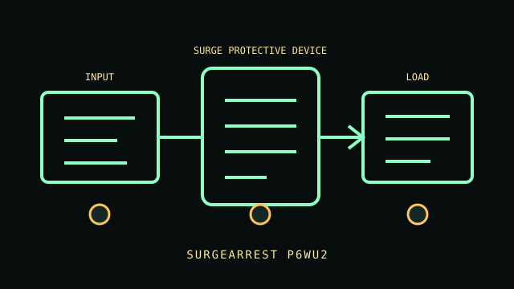

[ SURGE PROTECTIVE DEVICE // IDENTIFIED MODEL ]
SurgeArrest P6WU2
120 V AC, 15 A North American wall tap; 1080 J surge-energy rating. Six integrated NEMA 5-15R outlets. This record describes the named regional model only. Variants and accessories must be matched against the complete product label and manufacturer documentation.

ARCHIVAL IDENTIFICATION: Preserve the complete SKU, region, serial/date code, hardware/firmware revision, installed options and observed condition. Similar names do not establish electrical equivalence.
Exact model specifications
| Catalog category / topology | Surge protection devices — Surge protective device. |
|---|---|
| Electrical ratings | 120 V AC, 15 A North American wall tap; 1080 J surge-energy rating. |
| Receptacles / connectors | Six integrated NEMA 5-15R outlets. |
| Battery / replacement / hot-swap | Not applicable: this model has no battery or stored-energy backup. No battery/runtime; local protection/ground indicators and USB charging ports, not network telemetry. Requires grounded receptacle; no extension cord and no outlet obstruction. |
| Runtime / operating conditions | No stored runtime. The product supplies only its stated surge suppression, metering, regulation, distribution or source-transfer function; continuity depends on upstream AC and connected equipment. |
| Network / monitoring interface | Local protection/ground status indicators and any listed USB/telephone options; no network monitoring unless the model note explicitly states otherwise. |
| Electrical compatibility | No battery/runtime; local protection/ground indicators and USB charging ports, not network telemetry. Requires grounded receptacle; no extension cord and no outlet obstruction. |
| Warnings / revision controls | No battery/runtime; local protection/ground indicators and USB charging ports, not network telemetry. Requires grounded receptacle; no extension cord and no outlet obstruction. Verify complete suffix, electrical ratings, connectors, firmware/manual revision and regional certification against the actual nameplate before connecting equipment. |
Service and archival notes
- Photograph the nameplate, inlet/outlet map, serial/date code, status indicators and accessories; record load, input, environment and test date separately from manufacturer ratings.
- Do not confuse distribution/regulation/surge suppression/metering or transfer with battery backup; this model has no stored runtime.
- Never open energized mains equipment. Do not energize cracked enclosures, damaged cords, overheated connectors, compromised grounding or swollen/leaking batteries.
- No battery/runtime; local protection/ground indicators and USB charging ports, not network telemetry. Requires grounded receptacle; no extension cord and no outlet obstruction.
Manufacturer sources and manual
- APC manufacturer product search — SurgeArrest P6WU2Find the manufacturer’s specification sheet for the exact named model and regional SKU.
- APC manuals / support libraryUse the user guide, service and safety instructions matching the label and revision. This static archive does not replace manufacturer documentation.